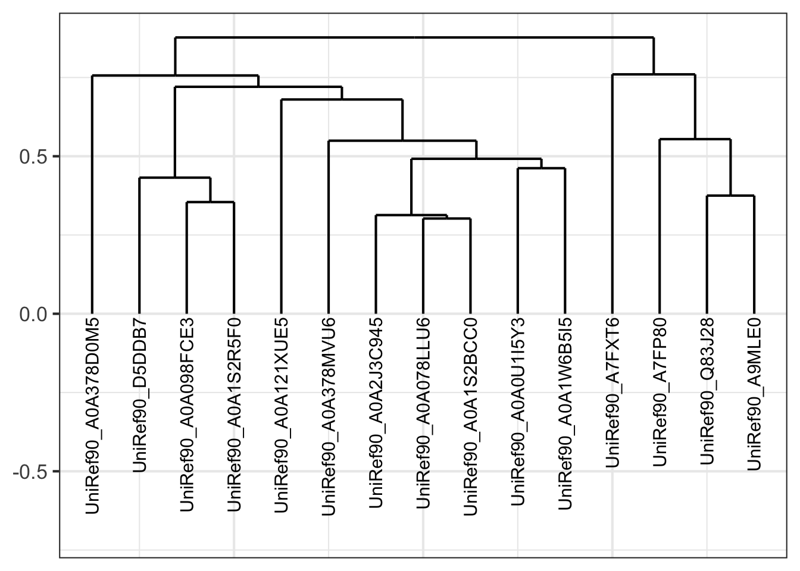
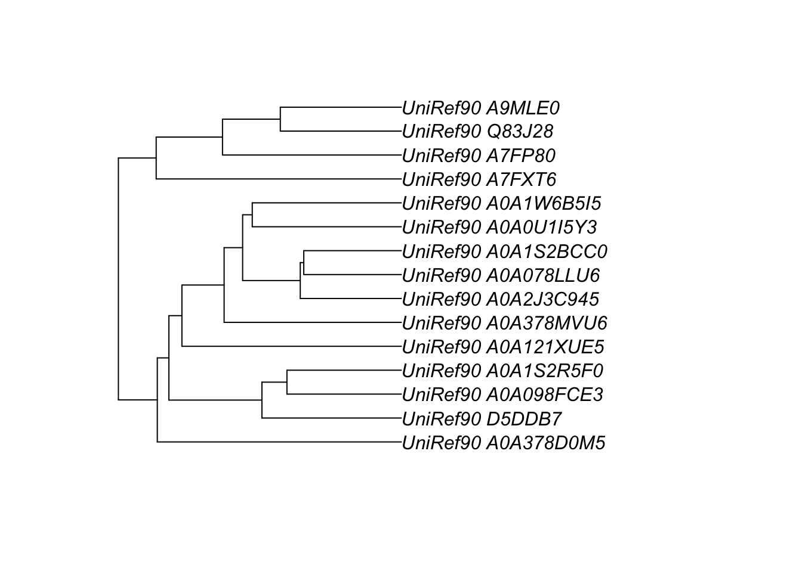
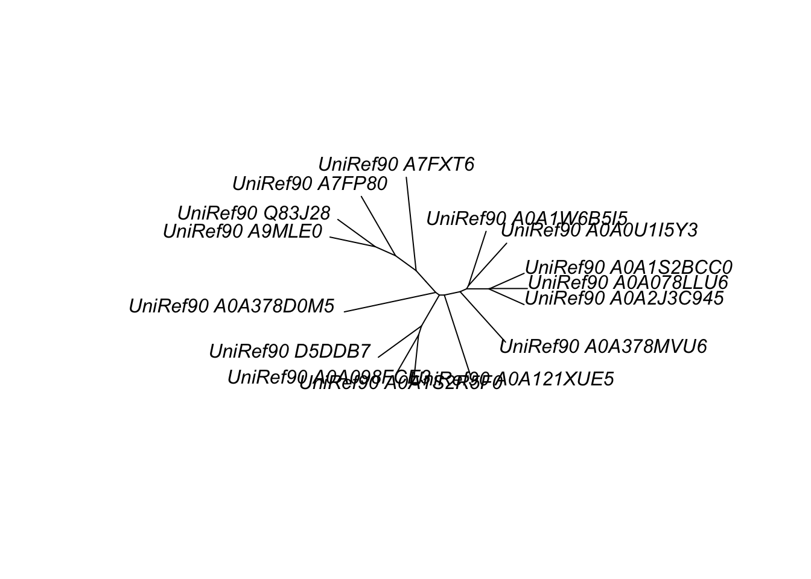

5 Lab 4: Handling of Biological Data in R - 2
5.1 Learning objectives
Click to expand
By the end of this lab you will be able to:
Demonstrate the ability to generate distance matrices from a variety of data types
Plot distances
Demonstrate the ability to generate dendrograms
Demonstrate the ability to generate phylogenetic trees
Demonstrate the ability to export and import trees and dendrograms
Demonstrate the ability to plot trees and dendrograms
5.2 Lab 4
In the previous lab you were introduced to handling biological strings with R. In this lab you will learn how to handle some of the output formats that result from analyzing those strings in R. In most cases, as you will see in lecture and subsequent labs, this entails working with distance matrices and some sort of hierarchical clustering of those matrices.
R’s basic data structures, mainly lists, provide very flexible containers to house such complex types of information. As you will see, most non-bioconductor packages house their outputs in list form or at least as list-based objects.
For the purposes of this lab you will need to install and load the following packages.
> install.packages(c("vegan","ape","ggdendro","seqinr"))
>
> # lapply is part of the apply family of functions, one of those functions that act as a for loop
> lapply(c("vegan","ape","ggdendro","seqinr",
+ "Biostrings", "tidyverse"),library, character.only = TRUE)5.3 Distances
When handling biological data, distance measures—also known as dissimilarity measures or indices— are useful in comparing multiple entities. These entities can be populations, environmental samples, gene sequences, genomes, expression data, etc. In essence, every time we draw a comparison, we ask the quantitative question: how similar is X to Y, or better yet, how dissimilar are X and Y? The degree of dissimilarity between X and Y can simply be represented as percent dissimilarity or might require more sophisticated mathematical transformation. The approach used to measure dissimilarities depends on the nature of the data, its format, and of course the question in need of answering. For example, when performing a pairwise sequence alignment, the alignment score can be thought of as a relative measure of the dissimilarity between the two sequences and can be expressed as a percentage of the maximal alignment score.
When calculating distances between entities (e.g., populations), the data you work with can be tabulated (e.g., allele/genotype frequency/abundance table, etc.) or non-tabulated (e.g., sequence alignment). R can do both, and the approaches are quite similar.
5.3.1 Distance calculations with tabulated data
BaseR is equipped to handle distance calculation with tabulated data. First let’s generate data to work with by uploading the dune dataset that’s part of the vegan package. This dataset contains the counts of 30 different plants (columns) in 20 different sites (rows). This would be similar to an allele/genotype/gene expression frequency dataset, only much smaller, making it a great training tool for the purpose of this lab.
> # Let's load the dune dataset
>
> data("dune")
>
> # Now, let's figure out what we're dealing with
> class(dune)[1] "data.frame"> # Let's see how the table is structured
> head(dune) Achimill Agrostol Airaprae Alopgeni Anthodor Bellpere Bromhord Chenalbu
1 1 0 0 0 0 0 0 0
2 3 0 0 2 0 3 4 0
3 0 4 0 7 0 2 0 0
4 0 8 0 2 0 2 3 0
5 2 0 0 0 4 2 2 0
6 2 0 0 0 3 0 0 0
Cirsarve Comapalu Eleopalu Elymrepe Empenigr Hyporadi Juncarti Juncbufo
1 0 0 0 4 0 0 0 0
2 0 0 0 4 0 0 0 0
3 0 0 0 4 0 0 0 0
4 2 0 0 4 0 0 0 0
5 0 0 0 4 0 0 0 0
6 0 0 0 0 0 0 0 0
Lolipere Planlanc Poaprat Poatriv Ranuflam Rumeacet Sagiproc Salirepe
1 7 0 4 2 0 0 0 0
2 5 0 4 7 0 0 0 0
3 6 0 5 6 0 0 0 0
4 5 0 4 5 0 0 5 0
5 2 5 2 6 0 5 0 0
6 6 5 3 4 0 6 0 0
Scorautu Trifprat Trifrepe Vicilath Bracruta Callcusp
1 0 0 0 0 0 0
2 5 0 5 0 0 0
3 2 0 2 0 2 0
4 2 0 1 0 2 0
5 3 2 2 0 2 0
6 3 5 5 0 6 0Note that the row names are made of numbers. It will make things clearer in the following steps if we modify sample names to be more meaningful.
> # Let's add S to each row, denoting site or sample.
> # Reminder, R is case sensitive
> # Note that here I am asking paste to generate a vector with a sequence of numbers 1-20
> # Then paste S to each element in the vector with no space separation
> # Then assign the new character vector S1-S20 to the rownames of the dataframe
> rownames(dune) <- paste("S",1:20,sep = "")Quick R exercise
The previous code snippet contained some hard coding. Can you think of two ways to make it less hard coded?
Next let’s calculate the distance between each of the sites using the dist() function from the stats package, which is part of baseR. When we calculate distances of tabulated data, we are conducting a pairwise comparison of every row in the table to every other row, based on the values found in each of the columns. Rows with similar values in each column will receive a low score. The score represents distance; low score = short distance, meaning that they are not very dissimilar (or very similar). In the snippet below I am using euclidean distance measure to calculate the distance between each of the samples.
> # Let's use the dist function to calculate the euclidean distance
> dune.dist.euc <- dist(dune, method = "euclidean")
>
> # The class of the variable created by the dist function is dist
> class(dune.dist.euc)[1] "dist"> # Let's print it
>
> dune.dist.euc S1 S2 S3 S4 S5 S6 S7
S2 10.583005
S3 10.000000 9.591663
S4 11.532563 11.704700 9.110434
S5 11.874342 10.535654 13.000000 13.711309
S6 13.711309 13.856406 14.764823 16.155494 9.000000
S7 9.695360 10.099505 11.916375 13.076697 7.280110 7.348469
S8 11.313708 11.916375 8.602325 10.344080 13.820275 14.491377 11.832160
S9 10.677078 10.862780 9.165151 10.246951 11.445523 14.422205 11.747340
S10 11.180340 8.185353 12.688578 13.564660 9.899495 10.440307 7.416198
S11 9.591663 12.165525 12.569805 13.152946 12.767145 10.954451 8.944272
S12 15.198684 14.730920 11.269428 12.489996 14.560220 15.652476 14.177447
S13 13.964240 12.369317 10.049876 11.135529 13.564660 16.583124 13.076697
S14 13.490738 14.491377 15.033296 14.594520 14.798649 15.937377 14.422205
S15 12.845233 15.588457 14.594520 13.784049 14.352700 15.459625 13.964240
S16 15.779734 17.916473 14.594520 14.422205 17.029386 18.357560 16.822604
S17 10.535654 13.820275 14.594520 14.899664 10.954451 14.035669 11.000000
S18 11.618950 13.000000 13.453624 14.212670 11.832160 11.704700 10.440307
S19 14.387495 15.329710 16.462078 15.874508 13.856406 15.329710 14.035669
S20 14.594520 17.349352 16.031220 14.966630 16.062378 17.233688 15.716234
S8 S9 S10 S11 S12 S13 S14
S2
S3
S4
S5
S6
S7
S8
S9 9.380832
S10 12.767145 13.527749
S11 11.313708 13.038405 9.746794
S12 10.344080 10.344080 15.620499 14.525839
S13 9.643651 9.949874 14.696938 15.524175 8.366600
S14 11.575837 13.564660 13.820275 13.266499 13.453624 13.304135
S15 9.433981 12.529964 14.764823 12.529964 12.727922 13.416408 8.185353
S16 9.643651 14.177447 17.832555 16.583124 12.806248 13.341664 10.723805
S17 12.767145 13.304135 11.661904 11.180340 13.784049 13.638182 11.180340
S18 12.041595 13.000000 11.224972 7.280110 13.490738 14.899664 12.369317
S19 14.106736 14.730920 14.000000 11.357817 14.071247 15.427249 13.000000
S20 11.180340 14.035669 16.673332 14.525839 14.422205 14.628739 10.148892
S15 S16 S17 S18 S19
S2
S3
S4
S5
S6
S7
S8
S9
S10
S11
S12
S13
S14
S15
S16 7.483315
S17 10.392305 14.422205
S18 10.392305 14.966630 10.000000
S19 12.165525 16.370706 8.366600 10.000000
S20 6.782330 8.602325 12.489996 11.401754 13.038405The output looks like a distance table from an old road atlas, and that’s exactly how it is read. The distance between S1 and S2 is ~10.58, the distance between S1 and S12 is ~15.20. S1 is closer to S2 than S12 with respect to what species of plants are present in this site and their abundance.
Dist objects look like matrices but they are not; they are in fact oddly shaped numeric vectors.
> # Dist objects are vectors
> is.atomic(dune.dist.euc)[1] TRUE> typeof(dune.dist.euc)[1] "double"Quick R exercise
Use the
str()function to study dune.dist.eucWhat attributes does it have? Which aspect of the output from the
str()function helps with reproducibility?Print elements number 1, 2, and 20 from
dune.dist.euc. What does that tell you about the order elements are indexed in dist objects?
Distance measures included in the dist() function are not necessarily designed to be used with biological data, since most of them are symmetric. Symmetric dissimilarity measures regard double absence similarly to double presence.
Say two populations show presence of a certain genotype or allele; dissimilarity measures will count this double presence toward lowering the dissimilarity score. Now say these populations also show an absence of a certain allele or genotype. Symmetric measures will treat this as a similarity between the two populations as well. However, when it comes to biological data, the absence can come from insufficient sampling of the population rather than true absence. Therefore, we need to use an asymmetric measure—a measure that does not treat double absence and double presence equally.
The R package vegan contains additional asymmetric dissimilarity measures such as Bray-Curtis. One of the contributors to the package is Dr. Gavin Simpson, a professor from the University of Regina, worth checking out if you are interested in ecological informatics.
The snippet below uses the function vegdist(), the vegan implementation of the dist() function, with Bray-Curtis as a dissimilarity index. The function is run twice, with binary set to either T or F. When binary is set to T, all values larger than 0 are converted to 1 and the rows are evaluated based on presence and absence alone. When binary is set to F, the distance factors in weight as well (i.e., not just present but how much is present). These sorts of measures are important in molecular evolution but also when analyzing omics data (and ecology of course).
> # Let's run vegdist
> dune.vd.bry <- vegdist(dune, method = "bray", binary = F)
>
> dune.vd.bry.bin <- vegdist(dune, method = "bray", binary = T)Quick R exercise
What class of objects does
vegdist()output?Use the
str()function to exploredune.vd.bryWhat will setting the arguments
upperanddiagtoTRUEproduce?What other distance indices does
vegdist()accept under the method argument?
5.3.2 Two dimensional representation of distances
Distance matrices (or vectors) are multidimensional, and as such it becomes harder to draw meaningful conclusions from them as the number of rows in your original table increases.
Ordination techniques such as NMDS are helpful in dimension reduction and can be used to represent the matrix in two-dimensional space. We will not go into the details of ordination techniques in this course, just use them. However, in general all of them try to represent the distance matrix accurately in as few dimensions as possible.
The snippet below will use vegan’s metaMDS() with the default setting of 2 dimensions. The end result of it will be each sample (line in the original dataframe) receiving two coordinates representing its location in two-dimensional space and how it relates to every other sample.
> # Let's perform NMDS on the Bray-Curtis and the euclidean distances
> # NMDS is a randomized iterative process, so setting seed to make sure the figure at the end looks
> # the same for all of us.
>
> # nmds for the euclidean distance matrix
> set.seed(1)
> dune.euc.nmds <- metaMDS(dune.dist.euc)
>
> # nmds for the Bray-Curtis distance matrix
> set.seed(1)
> dune.bry.nmds <- metaMDS(dune.vd.bry)The function metaMDS() can also call the vegdist() function and perform the distance calculation.
> # nmds with euclidean
> set.seed(1)
> dune.euc.nmds2 <- metaMDS(dune, distance = "euclidean")
>
> # nmds with bray, note binary can be set here as well
> set.seed(1)
> dune.bry.nmds2 <- metaMDS(dune, distance = "bray", binary=F)Quick R exercise
What class of objects does
dune.bry.nmdsbelong to?What type of an object is it?
Explore the structure of
dune.bry.nmds(hint: which function does that for you?)How would you access the 3rd element of
dune.bry.nmds?What type of an object is the 3rd element of
dune.bry.nmds?
If you completed the above exercise, you saw that the output of metaMDS() is essentially a list with 35 elements. What each element represents is not that important for this lab, but in general the list stores all the information needed to ensure the reproducibility of the output as well as quality measures letting you know how good your results are from a statistical standpoint.
For the sake of this lab, we are interested in the coordinates of each sample, and these are stored in the element points. The points element is a matrix with two columns of coordinates. Let’s extract it and turn it into a dataframe.
Let’s first extract the points for the euclidean distances:
> # Extracting the points matrix as dataframe
> # Turning the row names into a column; note that I am doing it the spartan way and not using the
> # rownames_to_columns function from the dplyr package
> # You can choose whichever method you prefer
>
> dune.euc.points <- as.data.frame(dune.euc.nmds$points) %>%
+ mutate(Samp = base::rownames(as.data.frame(dune.euc.nmds$points))) %>%
+ select(Samp, everything())Next, we extract the points for the Bray-Curtis distances:
> dune.bry.points <- as.data.frame(dune.bry.nmds$points) %>%
+ mutate(Samp = base::rownames(as.data.frame(dune.bry.nmds$points))) %>%
+ select(Samp, everything())Quick R exercise
Use the
head()function to inspect each of the dataframesDo you find it useful in deciphering the relationships between the samples?
The coordinates table might be simpler to look at compared to the distance matrix, but it still doesn’t really help us understand which samples are more similar to one another. In order to do that, we must plot the samples using a scatter plot. Samples that appear close to each other in the plot are more similar, while distant samples are less similar.
BaseR’s plot() function is a quick and dirty approach to generate a scatter plot straight from the output list.
> plot(dune.euc.nmds$points)
As always, base graphics are very spartan and not very informative. Let’s use ggplot2 to generate a more informative plot. First, we create a scatter plot for the euclidean distances:
> # geom_point produces a scatter plot
> p.euc <- ggplot(dune.euc.points, aes(x=MDS1, y = MDS2))+
+ geom_point(size=2)+
+ theme_bw(base_size = 16)+
+ ggtitle("NMDS Dune dataset\neuclidean distances")
>
> p.eucNext, we do the same for the Bray-Curtis distances:
> p.bry <- ggplot(dune.bry.points, aes(x=MDS1, y = MDS2))+
+ geom_point(size=2)+
+ theme_bw(base_size = 16)+
+ ggtitle("NMDS Dune dataset\nBray-Curtis distances")
>
> p.bryLet’s print the two plots together to compare them.

Examining the two figures, we can see that the two distance measures produced different configurations of the samples in two-dimensional space. This was expected since we are comparing two different approaches to measuring similarities between samples. However, this does not really tell us how the configuration is different. One of the geometries of ggplot2 is geom_text() that allows for printing labels. However, it requires adjustments of the coordinates to make sure that the points and labels do not overlap, which can be annoying. Luckily, the ggrepel package offers additional geometries that do the dirty work for you.
> install.packages("ggrepel")
>
> library(ggrepel)Now, let’s use geom_text_repel() to label each point with its sample name and compare the output of the two measures.
> p.euc2 <- ggplot(dune.euc.points, aes(x=MDS1, y = MDS2))+
+ geom_point(size=2)+
+ geom_text_repel(aes(label=Samp))+
+ theme_bw(base_size = 16)+
+ ggtitle("NMDS Dune dataset\neuclidean distances")
>
> p.euc2> p.bry2 <- ggplot(dune.bry.points, aes(x=MDS1, y = MDS2))+
+ geom_point(size=2)+
+ geom_text_repel(aes(label=Samp))+
+ theme_bw(base_size = 16)+
+ ggtitle("NMDS Dune dataset\nBray-Curtis distances")
>
> p.bry2
Now we have a plot we can use to compare the two distance indices. We can see that not only does each method result in a different configuration, but it also changes the way samples relate to each other. For example, using euclidean distances, sample S1 appears to be more similar to sample S7 than sample S2 is to sample S7. However, this is not the case when using Bray-Curtis.
Dimension reduction and ordination techniques are great at visualizing the clustering of items into groups, especially if large numbers of samples are involved. This is very useful when comparing a large number of populations with respect to allele or genotype dynamics or when studying transcription or expression patterns of a large number of individuals.
Note
A note about distances and ordination techniques
As I mentioned, distance calculation, ordination techniques, and hierarchical clustering (which we will deal with later in this lab) are important methods in exploring, understanding, and visualizing data. You will use these a lot as bioinformaticians, and it is imperative that you choose the correct method for the data you are studying. A great resource for that is the book Numerical ecology with R. While the book deals mainly with ecological data, it is relevant to biology in general. Unfortunately, too often researchers use approaches that are unsuitable for the way their data are collected or distributed. This book will help you avoid such mistakes. (Also, it’s always great to plug the work of fellow Canadians!)
5.3.3 Non-tabulated data
Non-tabulated data refers mainly to sequence alignments. We will deal with multiple sequence alignments in lab 6. For this lab, we will focus on understanding what object type results from comparing two or more sequences. In most cases you will generate this sort of data in R (we will do that in lab 6), however, sometimes you will have to import such data. Both Biostrings and seqinr have functions allowing them to read or accept alignment files or objects.
Let’s first use Biostrings since the XString family of classes is very convenient to work with.
> # The file practice_al.fa contains an alignment of amino acid sequences
> # Let's read it using the dedicated function from Biostrings
>
> al_bios <- readAAMultipleAlignment(
+ filepath = "https://raw.githubusercontent.com/idohatam/Biol-3315-files/main/practice_al.fa",
+ format = "FASTA")Quick R exercise
What class is
al_bios?How many sequences does
practice_al.facontain?Subset the first 10 sequences in the alignment
Now let’s do the same with the dedicated function from seqinr. Note that seqinr is not fussy and will read any alignment with just one function, while Biostrings has a function for each type of sequence (AA, DNA, RNA). Did I mention seqinr is spartan?
> al_snr <- seqinr::read.alignment(
+ file = "https://raw.githubusercontent.com/idohatam/Biol-3315-files/main/practice_al.fa",
+ format = "FASTA")Quick R exercise
What class of an object is
al_snr?What type of an object is
al_snr?
While seqinr's objects are less fancy than those of Biostrings, the seqinr package does have some nice perks. One of them is calculating the distances between the sequences in the sequence alignment.
> d_al_snr <- dist.alignment(al_snr)Quick R exercise
What class is
d_al_snr?What is the structure of
d_al_snr?Print
d_al_snr. Does it remind you of any other object you worked with during the current lab?
While it is possible to reflect the distance matrix resulting from the alignment using ordination techniques, it is more useful to visualize them using hierarchical visualization tools such as dendrograms and phylogenetic trees, which is what we will do next.
5.4 Dendrograms
BaseR has two classes of objects to house hierarchical information: hclust and dendrogram. The end result of both is a dendrogram, a tree-like graph where similar objects (samples, sequences, etc.) group together into clusters. Like 2D scatter plots, they are useful in fields outside evolution and phylogenetics.
The hclust() function performs hierarchical clustering on the distance matrices you generated earlier using an assortment of agglomerative clustering algorithms. We will not go into the details of each clustering algorithm at this point, but will use this to study the structure of the hclust object.
> # Let's cluster the sequences from the multiple sequence alignment and see how they relate to
> # each other
>
> hc <- hclust(d_al_snr, method = "average")
>
> # Calling an hclust variable prints information used to generate the object
> hc
Call:
hclust(d = d_al_snr, method = "average")
Cluster method : average
Number of objects: 15 > # The output is of class hclust
> class(hc)[1] "hclust"> # hclust variable is a type of a list (as always)
> typeof(hc)[1] "list"Quick R exercise
Use the
str()function to studyhcConvert the distance matrices generated for the dune dataset to an
hclustobject
As you saw, hc contains 7 elements. Merge, height, and order are used to specify the topology of the dendrogram; labels specify the label of each leaf; and the rest store information that helps with documentation and reproducibility.
Class hclust can be converted to a class dendrogram using the as.dendrogram() function.
> # Let's convert
> hcd <- as.dendrogram(hc)Quick R exercise
What type of an object is the variable
hcd?Call the variable
hcdUse the
str()function to study the structure of the variablehcdBased on the variable call and the output of
str(), how do variables of class hclust differ from class dendrogram? Which class stores more information?Convert the hclust objects generated for the dune dataset to class dendrogram
5.4.1 Plotting dendrograms
Both class hclust and class dendrogram can be plotted using the plot() function. This time the result is not too shabby. First, let’s plot the hclust object.
> # Let's plot the objects generated for the multiple sequence alignment
> # xlab and ylab are axis titles, main is the figure title.
> # Feel free to play with them
>
> plot(hc, xlab="",ylab="", main = "hclust")
> 
Next, let’s plot the dendrogram object.
> # par sets the parameters of the plot; mar sets the margins in the following order:
> # bottom, left, top, right.
> # Here I changed the setting of the bottom margin from its default 5 to 9.7 to make sure that the
> # labels of the dendrogram are not cut.
> par(mar=c(9.7,4,4,1)+0.1)
>
> plot(hcd, xlab="",ylab="", main = "dendrogram")
> 
As mentioned, hierarchical clustering groups similar elements together. In the case of the dendrogram we plotted, sequences. Each vertical line in the dendrogram is referred to as a branch; each tip is referred to as a leaf (in this case, each sequence is a leaf; when you plot the dune dataset, each sample will be a leaf). While the length of the branches between the two plots might be different, they are read the same: sequences that branch from the same junction are more similar to each other than the rest. For example, the sequences A9MLE0 and I83J28 are more similar to each other than to any other sequence. The level of dissimilarity between them is denoted by the scale of the y axis (0.2), which is the scale of the distance measure used in the clustering process—here, Hamming distance. Similarly, both these sequences are equally distant from A7FP80, and both are the closest sequences to it.
Quick R exercise
Which sequences are the closest to the sequence A0A378D0M5?
What is the level of dissimilarity between the group of 4 sequences to the left and the rest of the sequences?
From the figures, we can see that the sequences cluster into at least two groups (left and right). In lab 6 and in advanced courses (e.g., all the omics courses), we will use some statistical approaches to test what is the optimal number of groups that the leaves cluster into.
Quick R exercise
Plot the class dendrogram (no need to plot class hclust) variables you prepared for the dune dataset
Do you notice any difference in the topology of the trees, order of branches between the one based on euclidean distances and the one based on non-binary Bray-Curtis distances?
In labs 6 and 7, we will use the package dendextend to directly compare the topology of the different trees and dendrograms we generate.
Plotting dendrograms with ggplot2
ggdendro is a package that converts dendrogram class variables to a format that can be used by ggplot2 to plot dendrograms. This can be very useful due to the flexibility ggplot2 offers in plot design and output. Furthermore, the resulting class stores data in a way that is easily accessed and modified using other tidyverse packages such as dplyr and tidyr.
Variables of class dendrogram can be converted to class dendro, the class type used by ggdendro, using the dendro_data() function.
> # Let's convert hcd to class dendro
> hcggd <- dendro_data(hcd)
>
> class(hcggd)[1] "dendro"Quick R exercise
Use the
str()function to studyhcggdWhat type of an object is
hcggd?What type of an object are the elements labels and segments?
What type of information do you think is stored in segments?
ggdendro class variables, as you noticed, contain two important dataframes: segments and labels. The segment dataframe contains the topology of the tree and consists of 4 columns.
> head(hcggd$segments) x y xend yend
1 7.816406 0.8770710 2.757812 0.8770710
2 2.757812 0.8770710 2.757812 0.7564288
3 7.816406 0.8770710 12.875000 0.8770710
4 12.875000 0.8770710 12.875000 0.7599243
5 2.757812 0.7564288 1.000000 0.7564288
6 1.000000 0.7564288 1.000000 0.0000000x and xend denote the horizontal position of each branch of the tree (i.e., its coordinates along the x axis). y and yend denote the vertical positions of each branch of the tree (i.e., its coordinates along the y axis).
The label dataframe contains the labels of each of the leaves (shocking, I know) and consists of 3 columns.
> head(hcggd$labels) x y label
1 1 0 UniRef90_A0A378D0M5
2 2 0 UniRef90_D5DDB7
3 3 0 UniRef90_A0A098FCE3
4 4 0 UniRef90_A0A1S2R5F0
5 5 0 UniRef90_A0A121XUE5
6 6 0 UniRef90_A0A378MVU6x denotes the position along the x axis, and y denotes the position along the y axis, which is always 0. label contains…you got it. Now that we understand the structure of the dendro class, we can plot dendrograms with it using the ggplot2 package.
> # Let's plot the dendrogram with ggplot2
> # The dendrogram has two parts: the segments, which are basically lines stretched between two points
> # in two-dimensional space, and the labels.
> # That's why I did not specify the x and y coordinates in the initial ggplot call, but rather
> # specified them for each of the geoms
> p <- ggplot(data = hcggd$segments) +
+ # geom_segment draws the segments (branches/lines) of the dendrogram
+ geom_segment(aes(x = x, y = y, xend = xend, yend = yend)) +
+ # geom_text adds a text layer to the plot, which are the leaf labels
+ # The angle argument sets the orientation of the text and the hjust makes sure that the
+ # labels are justified horizontally
+ # Within the aes, y is set to y-0.01 so that the labels will be a bit further away from the tips of
+ # each leaf
+ geom_text(data = hcggd$labels, aes(x, y-0.01, label = label),
+ hjust = 1, angle = 90, size = 4)+
+ theme_bw(base_size = 16)+
+ # Don't really need any ticks or text for the x axis
+ theme(axis.text.x = element_blank(),
+ axis.ticks.x = element_blank())+
+ # The ylim function adjusts the range of values that ggplot includes in the plot
+ # Here I set it to -0.45 - 0.62 to make sure none of the segments or labels get cut off
+ # The default would cut it after -0.2, which means that some of the labels would not be
+ # fully displayed
+ ylim(min(hcggd$segments$y)-1, max(hcggd$segments$yend))+
+ xlab(NULL)+
+ ylab(NULL)
> p
I sold you on the fact that ggplot2 makes things flexible and great, but so far it looks more or less like baseR graphics. Let’s see an example of that. As I mentioned, there are several mathematical methods (e.g., k-means clustering) that help calculate the optimal number of clusters produced by the hierarchical clustering.
For the following graph, assume a hypothetical scenario where k-means indicates that the optimal way to group the sequences would be into 3 groups: the four on the left would be group 1, the four sequences on the right would be group 3, and the rest are group 2. It is easy to add a fourth column to each of the dataframes of the class dendro object with that information and then overlay the grouping on the dendrogram.
First, we use mutate() to assign a group to each sequence label:
> # Use mutate to add a column named Group which contains which group each sequence belongs to
> # We can use the positions of the labels to parse that; labels with position along the x axis smaller than 5 belong to
> # the 4 sequences on the left so we mark them as group 1, will do the same for the other two groups.
> # Can also use case_when.
>
> hcggd$labels <- hcggd$labels %>%
+ mutate(Group = if_else(x < 5, "1", "2")) %>%
+ mutate(Group = if_else(x > 11, "3", Group))Next, we apply a similar process to the segments dataframe:
> # Use a similar process with the segments
> hcggd$segments <- hcggd$segments %>%
+ mutate(Group = if_else(x < 5, "1", "2")) %>%
+ mutate(Group = if_else(x > 11, "3", Group))Finally, we plot the grouped dendrogram:
> # Now let's plot the dendrogram
> p2 <- ggplot(data = hcggd$segments) +
+ # Note that I color by the Group column
+ # alpha denotes how transparent the coloring will be; the default is 1 and I want the colors to be
+ # more gentle
+ geom_segment(aes(x = x, y = y, xend = xend, yend = yend, color=Group),
+ linewidth = 1.25, alpha=0.5) +
+ geom_text(data = hcggd$labels, aes(x, y-0.01, label = label, color = Group),
+ show.legend = F,
+ hjust = 1, angle = 90, size = 4, alpha=0.5)+
+ theme_bw(base_size = 16)+
+ theme(axis.text.x = element_blank(),
+ axis.ticks.x = element_blank(),
+ legend.position = c(0.93,0.89),
+ legend.background = element_blank())+
+ # Setting the colors manually because the red and blue defaults are ugly
+ scale_color_manual(values = c("dark red", "black", "dark green"))+
+ ylim(min(hcggd$segments$y)-1, max(hcggd$segments$yend))+
+ xlab(NULL)+
+ ylab(NULL)
> p2
Note
A note about machine learning While this plot might not look impressive, what you have done here is to take your first steps (unless you’ve done this before) in machine learning. When you ask an algorithm (e.g., k-means clustering) to classify your samples into groups, without specifying groups, you are performing unsupervised machine learning. Once you have enough information about how the particular set of data classifies, you can use it to develop a predictive algorithm that would classify new samples into groups based on the information resulting from the unsupervised learning. When you train or use an algorithm to predict which category a sample would be classified into, you are performing supervised machine learning.
5.5 Trees
Phylogenetic trees are tree-like graphs that not only denote relationships between each leaf on the x axis, but also include a time component on the y axis (i.e., junctions lower on the tree are assumed to have occurred earlier than those showing higher on the tree). Phylogenetic trees require storing more information than dendrograms (e.g., information about taxa, molecular information, genetic codes, model assumptions, etc.). The package ape offers the class phylo, which stores phylogenetic trees.
There are many methods to generate phylogenetic trees and several file formats in which phylogenetic trees are written (nexus, newick are the most common file formats). We will go over those during lab 7. However, at the end of the day they all result in a phylo or phylo-like class of variable. Here we will only get familiarized with said class.
Because all tree-like objects in R are stored as lists, it is easy to convert between them. The snippet below uses the as.phylo() function to generate a phylo object.
> hcp <- ape::as.phylo(hc)
> hcp
Phylogenetic tree with 15 tips and 14 internal nodes.
Tip labels:
UniRef90_A0A378D0M5, UniRef90_D5DDB7, UniRef90_A0A098FCE3, UniRef90_A0A1S2R5F0, UniRef90_A0A121XUE5, UniRef90_A0A378MVU6, ...
Rooted; includes branch length(s).Quick R exercise
Explore the list outputted by
as.phylo()(hcp). Which elements make up this list?What class does each element belong to?
As you found out, hcp contains 4 elements. The matrix edge consists of two columns:
[,1] [,2]
[1,] 16 17
[2,] 17 1
[3,] 17 20
[4,] 20 21
[5,] 21 2
[6,] 21 28Each row in the matrix represents a branch or an edge. If this sounds like terminology from graph theory, you are correct. Indeed, ape treats trees almost like association networks and actually allows you to add columns to the edge matrix and plot a network.
The numeric vector edge.length contains the length of each branch of the tree:
[1] 0.06032113 0.37821438 0.01798655 0.14418781 0.21604002 0.03878098Its order corresponds to the order of rows in the edge matrix.
The character vector tip.label surprisingly contains the label of each leaf of the tree, making those easy to modify (for example, remove the UniRef90_ tag).
Nnode represents the number of nodes in the tree; again, this is terminology borrowed from graph theory and represents each branching point along the tree (in our case, 14).
As I mentioned, phylo class objects can contain additional information about the tree. The phylo object can include additional elements such as:
node.label: a character vector that contains node labels, for example bootstrap values.
root.edge: a numeric value giving the length of the branch at the root if it exists.
tip.data: a vector dating the tips (leaves) of the tree, useful if some are not current.
5.5.1 Plotting trees
Plotting phylogenetic trees is straightforward using baseR.
> plot(hcp)
Alternatively, trees can be unrooted.
> plot(hcp, type = "unrooted")
Plotting phylogenetic trees using ggplot2 requires converting the phylo object to dendro and following the workflow we used earlier.
6 Summary assignment
Start a script file in RStudio; name it 3315_lab4_yourinitials.R You will submit this script and output file if applicable to Brightspace.
1. Convert the distance matrices generated for the dune dataset (euclidean and both Bray-Curtis) to an hclust object.
2. Convert the distance matrices generated for the dune dataset to an R matrix (you should have 3 matrices) and save them as CSV files. Make sure the file names are descriptive.
3. Convert the class hclust variables you have created to class dendrogram.
4. Plot both the class dendrogram and class hclust variables you created for the dune dataset using base R; give titles using the argument main. Save plots as jpeg using the RStudio plots tab.
- Do you see any difference in clustering between each of the distance measures?
5. Convert the dendrogram objects to dendro objects and plot using ggplot2.
6. Export plots as pdf using ggsave().
7. Add the column altitude to the label dataframe that’s part of the dendro class variables; have the values “low”, “high”, “sea level” added to each sample randomly.
8. Add the column Groups to the segment dataframe of the dendro class variables you generated. Divide the two Bray-Curtis based dendrograms into 3 groups and the euclidean into 2 groups based on the order of the samples.
9. Plot each of the dendro class objects; color the labels based on altitude and the branches based on the groups column. If this was real data, would you see any trends in clustering of these samples based on altitude? Make sure to export these plots as pdfs as well.
10. Use ?write.tree() and ?write.nexus() to export the phylogenetic tree generated in this lab. Give a descriptive file name so that it is clear which is a nexus and which is a newick format.
- Which functions would you have used to import each of the files you exported?
11. Write a function that reads all csv files from a folder, log transforms them, and uses metaMDS() to perform NMDS on all files with binary bray as distance. Make sure that the results are all stored as elements of a list (hint: make sure that the list has the same number of elements as the number of files in the folder). Make sure that your function returns said list.